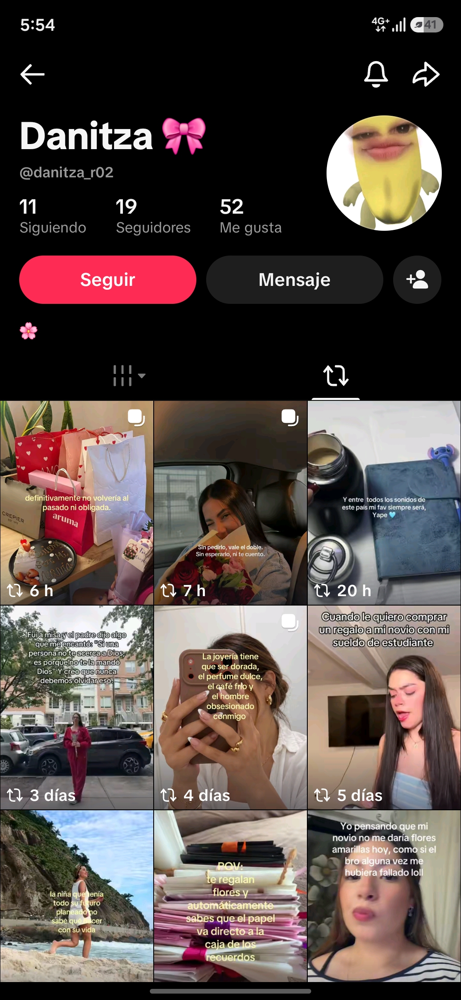

← retroceder
tt
00
15/08/26, soñé con ella (1:51 am)
17/08/26, otro día consecutivo soñándola
Me “dijeron” o bueno soltaron un comentario diciendo, "ni que se entere a donde se a ido... meseta andina, refiriendose a ella, Me puse frío… muy frío, a decir verdad. Ya debí haber aprendido. Yo realmente pensaba haberla superado, pero no es así (o creo que sí). Fue una sensación de desagrado al máximo; no hay explicación para describir eso. Sentí como que lo cenado se me venía. Me paralicé un montón. Me preguntaron qué me pasaba y solo me quedó decir “nada”, y con esa frase recordándola.
Sí, ya debí haberla superado, pero en estos meses no es así siempre. Siempre que “sé” algo de ella siento eso. ¿Pero por qué hago como que sí ya la superé? Ayer me hizo pensar en hacer lo que hizo ella, pero no… ¿o sí? La verdad estoy tan aturdido con la realidad que, bueno… a veces sí quisiera estar con una persona, aunque sea solo para aliviar un poco mi cabeza.
Hasta ahora no hay día, ni noche, ni madrugada en la que no la evoque. Y ella… ella no creo que ni le aparezca en sueños. Y una vez más aquí, escribiendo en la madrugada (18/08/26). Cuánta pena me doy, xd. Malditos sueños que son como señales. Maldito sueño: me decidí por primera vez a decir “no, esta vez me quiero quedar para ver qué es” y vi todo el sueño. Supongo que es un pasito de avance en el camino de superarla, pero no lo lograré si cada vez que me digan algo de ella me siento así.
Una vez más, no sé… Un día antes o ese día me llegó una notificación de que ella quería ser mi amiga en Facebook. La verdad ni entré; recién hasta ayer revisé y no había solicitud. Me hizo pensar que no fue ella, sino el tipo, pero qué raro para que sea él; ya como que muy mayor para estar en eso :v. Pero ya, cada quien, como decía ella, jaja.
Suena una frase: “el ciclo se cierra cuando alguien te nota mejor”. Creo que ya es momento; ya pasaron meses. A decir verdad, nuestro distanciamiento no empezó a inicios de año (enero), sino mucho antes. Pero, si en papel fue a finales de enero que ya dejamos de vernos…
También suena más veces lo que me decía: “tengo que hacer algo”, y yo solo “confiaba” :v. Bueno, solo me decía que hiciera lo que tenía que hacer, y yo también lo hice porque no la dejaría. Así de libre la dejaba, y sin remordimientos, porque cuán liberales eran mis sentimientos. Sonará perverso, pero ahora dudo de cuando me dijo que iba a pasar la noche en un hospital XD. Bueno, y así en varias situaciones, como cuando viajaba a verme, jajaja.
¡Ya sal de mi cabeza! Ya quiero hacer mi vida. La estoy haciendo, pero la quiero hacer sin sus recuerdos. Porque sí: qué lástima que haya desperdiciado “mis palabras de primera vez” con “alguien” que ahora resulta que nunca conocí… o bueno, sí, pero a la persona :v. Me siento tan frustrado de haberla hecho perder tiempo y también el mío. Malditas palabras y acciones que nunca debí haberle entregado.
19/08/26, soñé… o bueno, fue pesadilla. Otra vez sobre ella. Espero se encuentre bien.
20/08/26, ya que salga de mi cabeza. Me atormenta mis madrugadas. Esta vez me dio una carta por mi cumpleaños y luego se marchó con un tipo. La busqué, pero fue en vano. Simplemente se marchó, porque ya estaba “con otro”.
Estos sueños que estoy teniendo, ¿serán una especie de presagio? ¿de señal? No lo sé. Cuánto me gustaría saber las respuestas a todas mis preguntas, pero simplemente no pasará. He pasado todo este tiempo, imagínate, ilusionando escenarios de yo y ella, y sé que todas esas escenas jamás se harán, porque así es: lo que uno imagina o planea nunca sale… bueno, a mí nunca me sale.
Ronda en mi cabeza un posible embarazo. No sé si es pensamiento o un sueño que tuve estos días. Estoy harto, harto de estar atado a un pasado que simplemente no me suelta; o mejor dicho: mis recuerdos pesan demasiado para soltar.
Aun es agosto, bueno ya esta semana se acaba agosto, pero sigo soñandola. punto parte xd
Son micro sueños, pero ya bueno, deje de utilizar la laptop, ya olvide como ponia la ñ, ahora tengo que ponerlo con numeros, jaja, que frustrante, me agobia estó, pero almenos sigo sabiendo como poner las tildes o eso creo, la verdad las pongo no dodne van sino donde creoq ue van y bueno van los pongo en donde no van xd
Ahora uso Notion, para escribir en cualquier lado y bueno tambie corregir mi gramatica, me ayuda bastante xd, encontre mi proceso de preparacion para la unp, encontre uff jaja, no sabia que lo habia guarado o bueno xd
Se acaba agosto, han pasado cosas, mis papas practicamente me han dicho que eh sido un tonto en llevarla a casa o bueno "presentarla", de hecho nunca la presente solo llegó y bueno a dormir xd, pero si les dije que estaba con ella ya que la traia con frecuencia, ya ni modo decia, tocara decirles, aunque creo que ni estabamos en ese entoces xd
Bueno me llamaron tonto en pocas palabras, tambien me dijeron que su mamá, una ves recogiendo el kaliwarma los vi con una cara que xdd, pero con una mirada de aquellas veces que me topaba, y bueno yo solo les dije "jaja" "no le hagan caso" "ya fue"
Modifique el inicio, quedo feo, quise cambiarlo perooo, jaja, ya ni ganas tengo de cambiarlo, ya que quede ahí, igual sé que en algun momento solo eliminare el repositorio o solo quede nuevamente abandonado
No recuerdo bien la fecha, pero fue el 25 creo, la ví o eso creo, yo estaba sentado en la moto y regreso a ver el bus que pasaba y era su mirada de ella, se via o bueno yo la vi que tenia una mirada apenada, motovos no lo sé, quizas problemas no lo sé, un momento pense que era porque me vio, pero dudo que haya sido ella, aunque hace meses, 100% podria reconocer aquella miraba entre muchas, pero ahora solo dudo que haya sido ella, pues como que se estaba escondiendo xd
Tambien, revise su perfil, juraba que ya lo iba hacer, pero no pude la curiosidad... bueno el morbo de saber, pues primero entre al del tipo, vi su ultimo que etiquetaba a ella, aparentemente creé en Dios, y bueno entre al de ella, pero antes entre al de joselin, no sé porque pero se me da entrar ahi primero y veo una que decia "me va mal en el amor, pero ahora veo como le dan todo el amor que se merece..." y yo con XD, todo pasmado bueno ni tanto pero si :v
Y yo las unicas dos veces que le pedi a "dios" fue cuando le pedi por mamá que la curara, y jure que jamás lo volveria a evocar, pero falle lo evoque para que la cuidara cuando viajó...
Luego solo vi las preevisualizaciones o no sé como se diga, pero entre tantas ví una que decia algo de canciones y una boda y yo otra vez, bueno me pude a pensar en aquella madrugada que ya está esta pensando en eso y bueno. tambien relacione que ambos creen en dios y toda eso y me parece bien, osea todo bien, es loq ue tanto quizo supongo, bueno tambien con lo que me dijeron mis oadres fui un niño lit, y ella si tenia los pies sobre la tierra y ahora encontro al hombre. vi tambien algo sobre su graduacion o tesis ya no recuerdo, me puse a pensar xd, bueno solo soñe despierto que ese dia yo seria una de las personas que se va a alegrar mucho por ella pero en silencio xd
Quizas este mal, sigo apegado o bueno ya no, ya solo vivo con un recuerdo que jumm, solo uno ya se acostumbra
Y bueno septiembre, jaja
Es increible como uno pierde el juicio y escribe sandeces de una persona..., que escribio cosas nada que ver xd, jaja, que tonto, tan tonto que pierde el camino sin darse cuenta, bue si pero solo ignora
como voy a escribir cosas sexuales ofendiendola a aquella persona si yo no sé nada de su vida, como es que me atreví a escribir cosas de ella, que idiota soy, bueno fui xd
creo que por eso la vida, su cielo, se le convirtio en tormenta porque su cielo jamas fue un atardecer solo fui su noche
Pobre diario que jamas vera, bueno esta en mi mochila xd
Sé que algun dia voy a encontrarla, no sé que seremos, pero ese niño la buscará, buscara para coincidir pero no lo logrará o quizas si pero solo la vera
un amor de jovenes que el tiempo solo hara recuerdos difusos
Aquella vez le dije entre ojos sollozos que... ella solo me miró y dijo "ya me superaras", con una ternura que mataba, con un rostro que adoraba, con esos labios que jeje, tan tierna, tan bonita.
¿BYE?
jumm, es raro, dije el “bye” hace ya un tiempo, pero una ves más me encuentro aquí, ¡no sé!, nose que me está sucediendo, creí o creia que estaba cambiando, la “gente me mira” y los veo y pienso -Qué hipocritas tod@s-
son muy condensedientes, siento como si ya les debo algo, no me gusta para nada, que “me ayuden”, yo puedo solo o eso creo o eso siempre taro de hacer, pero una ves mas me encuentro aqui, en una pagina de mrda, en donde solo almaceno mis pensamientos, cual como si fuera una linea de tiempo, siento que todo sigue de la misma manera, la misma persona inmadura, una persona infantil, una persona mediocre, sin ambiciones, sin ganas, con flojera, una pobre diablo un pesimo ejemplo de persona, un pobre diablo, que aaggg
se siente de la mrda recaer una y otra ves, y no es por culpa de nadie, sino todo es tú mente
incluusive cuando me encontraba en trujillo, a pesar de tener el cuerpo hecho mrda, mi cabeza no descansaba no era sufiente, mi mente no se apagaba, me jugaba en contra evocando, creando sueños, sueños de ella o con ella o solo ella apareciendo con el tipo, en escena que hasta hoy no se me quitan, sigue ella, ella su recuerdo persiguiendome, no me suelta o soy yo el que no quiere soltar, -¿todabia no?-
soy un mal hijo, a pesar de ver como me apoyan no hago lo sufiente, me frustra más, me hundo yo mismo, me rompo, me caigo, me destruyo, -NO puedo-
mis salidas almenos me han servido para confirmar, que mamá merece algo mejor, jaja, me alagaba en decir -yo no soy como papá- y termino siendo la misma webada
ojala mamá no lo hibiera conocido, asi yo no estuviera hoy aquí, en un espacio virtual en donde es mi unica salida hoy en día
solo quería a alguien que no me abandone, pero que egoísta sigo siendo xd, no me molesta, me frustra al saber y darme cuenta, que fui lo que pocas veces me decía “un niño”
nada esta cambiendo mi propia atadura a ella me persigue, sigo aprendiendo en como llevarlo dia con dia y lo hago, pero es como si fuese un mosquito en la cabeza que suena y suena a pesar de que lo espantes no sale, no se calla, solo sigue ahí, somo si fuera su propiedad
eh sido un inmaduro, en solo sacar conclusiones o escribir de ella o su vida de ella, solo con las pruebas del tik tok, que iluso, que idiota, cuanto me destesto, es como la ultima ves, que hice ese acto tan cruel, que me pinto de cuerpo completo que mis alteraciones no tienen limites, solo pufsss, explotan
que pndjo
hubo una seman en donde se me aparece, pero ya no logro=aba ver su rostro, no sé porque mi cabeza ya no recrea su cara, ya siento haber olvidado el ruido chilloso de su voz, ciertas ocaciones me parecio verla que aparentemente era ella, hace unos dias atras vi a su madre y solo me confrimo que a lo que mas temia era aquella mirada, le tengo miedo, -que mrda- por eso los escalofrios -jaja, patetico-
entre a su perfil, si tik tok sigue avisando que entraron a los perfiles, entonces que me acusen de odsesivo y posecivo, bueno lo segundo y lo primero ya no tanto xd, pero si de chismoso, solo quiero saber un poco de la vida de aquella compañera de vida, aquella amiga
ví como se refiere a el de -mi hombre, mi novio o cosas asi por el estilo- es raro sentir que no sientes ya como antes, pero es raro, es muy raro, como aprendo a solo vivir, con aquel hilo invisible de un pasado que me destruye, -mis deyabus, en mi perpetuo y repetitivo vida monotana de mrda-
ya mitad de septiembre y no eh hecho ni una mrda, todo se resume en llegar las noche y decir -ya mañana sera diferente- y amanecer y ver que lo puedes hacer pero, pero solo te quedas pasmado como si un peso no te dejara levantar de la cama, es como si solo no pudieras, pero eres conciente de que si puedes, pero algo me ata, estoy arto de esa sensación de mrda, estoy arto de esta vida tan aburrida, esta vida sin un tono de color, sin desorden que altere mi orden, sin bulla, todo se supe a una aburrimiento tan absurdo que aaaaaaaaaaaaa
comienzas a leer y no acabas, comienzas a caminar y te detienes, comienzas correr y te cansa, te caes y no te levantas, te gritan y solo te quedas perplejo
has arruinado tu vida, se nota en tu mentalidad, en tu fisico, tu vida es un desatre, eres un niño al que siempre destruia sus juguetes
ya nada es lo mismo
ah solas, ah solas, solo tu sabes cuan vacio estas, eres fracaso, 22 años, sin nada, sin estudios, en la miseria tanto labooral como mentalmente
mi vida se va y yo solo observo, solo observo
engañarme ya no sirve de nadaa, solo sigues mintiendo a diestra y siniestra
-me caes mal-
ya no quiero sentirme solo, en un entorno que al ver de otra perspectuva dirian -patetico-, alguien me que ayude porfavor, no quiero sentirme solo
¿alma gemela?, ella esta con otro xd, joder
grrrrr xd, (sonido de suspiro profundo xd), ah sido una semana muy rara, demasiada, de recuerdos, de aptitudes que creí haber cambiado o al menos poder controlar cuando se manifestaban, pero no es asi
esta semana se malogro mi celullar, ese telefono que me acompaño desde el hace 7 años creo, hoy ya descansa, me trajo muchos relajos, de los malos o buenos pero me los trajo, aliviaba mis pesares, mi cabeza, aunque hoy en dia mas es como consecuencia que como algo bueno xd, pero en algo me ayudaba, aquel telefono que casi destroza ella JAJA, que idiota fui, decidi volver por ella, pero a que costo, le traje solo problemas, “la negue”, le cause una inseguridad o si no lo hice le alimente mas aquella inseguridad, fui muy niño a su lado. Pero ya bueno, mi celular ganador de mil batallas, porfin ya descansa (R.I.P-2026)
esta semana tambien despues de meses, creo que 5 o más o bueno ya desde años que, que bueno me desolculto o me agrego, no lo sé, es solo mi cabezas sacando concluiones que nada que ver con la realidad, pero lo hizo asi, me levante, hice mis cosas y entre a clases, entre al apartado de estados, no recordaba que ya la tenia como “mabel” asi que me parecio extraños, ni se me pasaba por la cabeza que era ella, pero al rato ya en breeck entre y era ella, en un no sé donde, pero estaba ella y el tipo, cuan sonriente se le veia, senti cositas, pero fue algo muy efeimero, se desvanecio muy rapido, pero igual sigue remob=viendo fribras, pero igual al dia de hoy ronda la pregunta del porque lo ah hecho despues de tanto tiempo, no la entiendo o bueno si, es lo fascinante de ella, jeje
bueno para no perder el hilo, sigo sin poder controlar o amenorar las consecuencias de mis precipitaciones de deciones y acciones, sigo siendo el mismo impotente e impaciente que ayer, las mismas actitudes que sobreexplotaaban con ella, no sé porque no lo lograba controlar con ella, la hice cenar sola, le bote la cena, no la escuchba, la abandonaba, la dejaba sola en lugares que aaaa, son actitudes que me pintan de cuerpo completo, pero cuando lograba reponerme, solo me recibia con un -haces como si nada hubiera pasaba-, no la culpaba, no le deciia nada, pero era duro escuchar sus palabras, pero la entedia porque no sabia cuantp=o esfuerzo tenia que hacer para poder estar a su lado
estos problemas me los merezco, sabiendo en las consecuencias aun asi lo hago, vienen unas deudas que ufff jaja, que tonto soy al dejarme manipular por aquellos impulsos, cuando regrese a casa despues de no haber lohrado controlarme, en ese camino venia haciendo escenarios en donde le pedia perdon a mamá, por haberla hecho llorar en abandonar mis estudios, en haberla hecho sentir mal, en esas escenas le pedia perdon, -perdon por el un mal hijo, perdon por haberte desepcionado, perdon por ponerte de caras, perdon por haber atado todo mi futuro a algo que no funciono- al crear esos escenarios de “la nada” salian lagrimas, ahora o no sé pero sigo viendo mis problemas como algo insignificante, pero si los veo asi, proque me hundo más, es algo que no entiendo minimizo cada uno de mis sentimientos, disminuyo cada problema mio, pero bueno me hundo, solamnete me quedo solo
Y hoy, hoy la soñe, estaba ahi ella, parada, tal cual lo veia siempre, pero está ves en mi sueño, hace meses que ya no la veia, pero hoy la vi a cuerpo completo, quizas haya sido porque la vi despues de mucho en aquella historia, no lo sé, pero la ví. mrda estaba tan bonita, tan hermosa, con una sonrisa casi difusa, con un jem o no se como se escriba, pero era creo ese pantalon que le compre, no lo sé, estaba con eso y con un polo negro, JAJA ahora que lo pienso bien, justo esp tenia en la historia xd, que patetico, pero bueno, la vi toda hermosa, tal cual la veia en aquellos atardeceres, en aquellas noches, en aquellas mañanas, joder que bonita, me haya sonreído o no en mi sueño, la cosa que la vi bien, haya sido por un instante pero me alegro mi amarga madrugada y ya no puede dormir, solo estaba con los ojos cerrados pensado en mi vida
a decir verdad no eh dejado de pensar en ella ningun solo dia, han pasado 8-9-7 años, que ah visto un dia en que no la haya pensado, que vida tan pendeja la que llevo
han sido golpes muy fuertes cada murmuro sobre ella o el tipo y ella, ver aquellas fotos, aquellas compartidas, aquellas frases de cada persona, aquel sentimiento, pero bueno asi es el “amor”, ahora mismo no se que como definir como fueron mis sentimeintos si era cariño o amor o obsesion y amor-enfermo, no lo sé
me puse a pensar si hasta ya algun familiar mio la haya visto y la haya mirado mal, pero conociendo a mi familia imagino que si, espero equivocarme y que no hayan mirado de aquella manera, esta en todo su derecho y me alegra aunque mas parezca amor-odio, pero alegra por ella, mas de que imagino quizas, pero me agrada saber que ah sido un años para ella de lo mas “bien” o eso pienso y creo, de cierta manera me intriga su relacion de ella con el tipo, de ella con su hermano, de ella con su papá, de ella con su mamá, hoy todo para mi es contrdictoorio, pero ya no es mi problema, pero en el pasado lo fue era mi prioridad, no supe ser la persona que necesitaba o solo fue que ella no lo quizo jaja, me hizo sentir despereciado, pero ya ya, asi soy, apoyo incondicional creo que se llama, de alguna manera me gusta enfermeria, aunque entre para estar algun dia a su lado, jaja, ya en dos semanas tengo parciales y no eh estudiado nada desde que entre, lo bueno que es la ucv, ahora es cuando mas necesito usar sus conocimientos de ella y que me de guantes y mascarillas para laboratorio xd
es increible como quize que al hacer la mas minima cosa, que todo me recuerde a ella y valla si lo logre, pero ahora eso es distinto porque ella no esta mi lado, es cruel verme al espejo de la puerta y ver una silueta total desecha, un miserable sin trabajo sin estudios, sin nada, mal criado de cuerpo fisico y mentalmente
no creo poder hablar asi de alguna mujer, ella si fue mi primera vez en todo, confiaba demasiado en si lograria cambiar, pero fue tarde le demostre lo patetico que podia ser y solo, solo tomo la mejor decisión que pudo haber tomado, como pude cambiar tanto…
ya ppara acabar siempre me parecio raro ver ese 02 al final de su nombre de usuario de tik tok, jaja aveces pensaba que era por mí, que tonto, que idiotaaa -idiota-
pero hoy en mi sueños la logre ver despues de mucho, aunque ese peinado de trenzas ya lo vea el tipo jaja, bueno bueno ya debo dejar de lado esa imagen de la historia, la vi tan hermosa como intrigante, -que bonita- gracias queriada cabeza mia por recordarme aquella cabeza extraña jeje
es hora de escribir xd: bueno ya mismo es lunes, si otra vez, estuve posponiendo escribir, se siente un poco incómodo escribir y terminar escribiendo para o por o de ella, si me siento algo idiota, pues yo ni le cruzo por la cabeza y ella en la mía vive, vive más que cualquier otro pensamiento o preocupación o lo que tenga en su momento y eso me siento tan tonto
bueno ya es lunes ya son las 12, la semana pasaba fue mi cumpleaños la verdad que. o esperaba que pasara nada y asi fue, terminé mis clases ya casi por anochecer y al salir estaba levemente lloviendo y pense -por lo menls alguien si se acuerda- y segui mi camino hacia el mercado y en el bus estuve reflexionando yo le llamaría "pensar pensamientos", aveces pienso y me pongo a pensar sobre lo que pensé xd literal jaja, estueve pensando en lo conmosianado que estaba pues esperaba que ella me escribieray diciendome tal vez -hola, felizcumpleaños-, pero ese mensajenunca llegó, al llegar a casa encontre a mi familia afuera, me estaban esperando pero lo dudo, al entrar se pararon y me felicitaron el único abrazo que denti reconfortante y sincero fue el de mi hermana mayor y el de la última, cuando sali en la madrugada solo quería irme rápido a pesar de que mamá ya estaba despierta y me despedí no me dijo nada, ya me lo esperaba, pero tenia mis pensamientos en aquel 2024 y 2025, pero lo bueno que me hicieron o hicieron uno de mis platos favoritos esa simpleacciónme hizo muy feliz, pero en cada bocado era un recordaris del pasado, me sentí solo, pues todos salieron y al regresar solo escuché que una señora se pudo mal y se fueron, pues ya estaba en mi cuarto y solo quería dormir a pesar de estar en la universidad todo el día son mis unicos días en los que no siento la monotonía o bueno si, pero almenls no me la paso tan aburrido y tan abrumado por mis frustraciones y arrepentimientos, la verdad que esta vida que llevo la llevo y vivo solo con remordimientos, eso no es vivir
en estos días, la estuve estalkeando, la ultima vez que fue ayer, una tonta so risa se formaba en mi rostro, pues todas sus co partidad o la mayor parte de ellas son para y por el tipo, pensé -si está enamorada esta csmr- sonríe, sonríe y me agrado saber que se encuentre con alguien o almenls con un tipo que no la decepciona y que es, el es, el tipo que esperaba su personalidad frágil e infantil, su hombre :v, su nonvio como dicen sus compartidos, unas veces me ponia a pensar en su edad, la verdad no creo que sea tan mayor cono aparenta, yo soy menor y aparento más JAJA, bueno no es punto, los mayores estan de moda :v, es ingeniero, cuando estuve por matricularme recordé que me dijo -y no quieres ser ingeniero- y también recordé que guradaba y compartía sobre ello y de un tipi alto y de lentes :v, creo que es su tipo xd, la verdad no sé
y esto me pone en una situaciónvergonzosa pues una vez. as escribo de ella, con qu derecho escribo tanto, soy un pndjo, escribi de un embarazo como fui capaz, estoy manchando su imagen con mis pensamientos, la verdad nunca me senti mereceder de estar a su lado, yo un patético al lado de una divinidad que siempre era fierte a pesar de los problemas, aunque ahora comparte cosas que jumm, pero ya no es mi asunto, pero lo fue y eso es como una intriga que tengo ahora, bueno pontro es el cumpleaños del tipo ya espero que ella comparta o publiqué algo, tal ves una cena o yo que sé, pero es algo que espero, pues no por nada ya me desoculto, y a pesar de que. o tenga idea, cada vez me lastima mis recuerdos, y es algo normal pero como duelen sus estacas xd, la verdad espero con ansias que publiqué pronto o el año que venga sobre su graduación o internado pues aún recuerdo su sonrisa von la que me dijo -ya el año que viene uso ese uniforme- fue grandioso verla la ultima vez, hasta hora ni los topo ni lo topo y es mejor asi, a pesar de que algunas veces me haya parecido verla, pues no creo que haya sido, es co.o cuando escribi que me parecio verla esconderse en el bus y la verdada ahora creo que no fue ella, pues esa persona iba sin lentes y ahora ella usa lentes, se peina me dijeron xd, aayy a mi gustaba verla despeinada siempreme gustó su naturalidad su naturaleza de esencia de mujer, ya ahora como que la veo ya no tan menor osea ya la veo como una persona de 21 años o buenl eso veo en mis recuerdos ya. o somos adolescentes yo ya perdí todo rasgo de mi juventud:v
esperó tener la valentía del dia su cumpleaños yo poder felicitarla, pues de que lo hago lo haría, pero apuesto todo que el tipo la sorprenderá con algo y bueno yo solo mi mensaje mediocre :v, pero bueno ojala se dé, auqnue sospechoso que ni me responderá y ni se acordará de que yo recuerde porque ni por sus mas bajos pensamientos le paso jajja, así de mediocre soy ahora, pero ya, ya está
la semana pasaba también sacaron un video sobre mi cuñado bueno sobre ese tipo, la verdad en parte como que me alegro jaja, bueno no solo me burle, pero esque como se les ocuree grabarse, pero ya está la kgo, pero me jode que hagan cachuda a mi hermana :v, no sé que tipo de indignación tenga ahora mismo que su "marido sea noticia a nivel nacional" alaaa no que feoo, pero bueno ojala este tomando valor para que algún dia se separé y si no, pues solo que espere unos años y le pago una carrera y la apoyo pues como va mi vida lo mas seguro que este solo y eso no me molestaría jaja, uno si sabe estar solooo, pues espero este mejor de lo que pienso, ojala pase pronto estas pruebas que tiene la familia chero more, jaja, pero bueno uno cosecha lo que siembra y lo hace y acá hacemos todo mal, entre nuestras actitudes de alguna manera nos entendemos pues "somos familia"
aahh y porque escribo a estas horas pues estuve con unos "amigos" me mareé, vine, cene y me dormí jaja, que vida la que llevo a pesar de estar muy limitado de dinero y que necesito pagar pues me gusta vivir en angustias y penubrias y es una pena que jaja, me recuerda a re:zero del cap 18 jaja ese dia lloré porque yo quería una persona asi, y que me entendiera de tal manera, pero bueno son solo fantasías que uno tiene o bueno tuve, últimamente pierdo mi tiempo en ver animé son mi unico distractivo, tengo que estudiar, tengo que trabajar pero no lo hago, jaja, no sé hasta cuando pueda aguantar
algoq ue queria anotar o bueno poner mi verguenza ajena que tengo o bueno no sé si es eso o mi pena o mis mediocres pensamientos y acciones, es que fue hace mucho tiempo, yo sentia muy duros las palmas de mis manos y cuuando ella me dijo, fue como algo, que hice decir no quiero lastimarla, pues cuando la acariciaba ayy que era tan suvee y mis palmas todas duras jaja, no fue por eso pero si tenia ese pensamiento cuando estaba en taller o hacia algo que hacian que mis manos quedaran asi, si asi de pndjo estoy o estuve
ya llene mucho esta pagina 12, creoq ue pasare al 13 jaja
hoy estuve taxeando, ya cuando estaba desocupado de la nada se me ocurre buscar a mi hermana sarai en faceboock, jaja esta en amores, al buscarla en tik tok, justo me sugiere tik tok buscar a "vite" me salia que habia nueva publicación y yo -jummm- entre y jaja no habia o eso creo pero se me escapo un me gusta en sus compartidos, luego me rei, fue gracioso almenos para mi pndja cabeza lo fue, que chismosa la gente
bueno tambien supe que hasta en america han pasado lo del caso de marcelo, luego tambien supe que mayra no mando a mi sobrina al colegio, ayyy si que esta dura la cosa, bueno de mi parte, tengo pendientes, no sé que hago aqui a la 1:3o de la tarde si tengo tareas y parciales para mañana
tienes que cambiar erinson, ya se acaba el año y sigues en la misma mrda, bueno siempre sere despreocupado de las cosas y luego preocuparme, pero si deja tu adicion de estar estalkeandola, ella esta de lo mas normal y tu estas ahi, tratando de imaginar que pasa y solo me hago mas daño bueno no, solo mas alimento mis malos sentimientos xd
hay que saber perder me dice la cabeza, pero si siempre soy el que se resigna, el que se doblega, el que se rinde, esto me llevó a pensar en el dia que dije a mi prima: -la conquisto porque la conquisto, si no no me llamo erinsonchero- jaja que egoísta fui, demasiado egolatra, una webada de persona quereiendo recuperar algo que yo mismo seque, que yl mismo maltrate una y otra vez, por jugar con el amor hoy bueno no hoy, sino en marzo el 11 "me toco perder", pero en realidad eh perdido? jaja es mi egocentrismo jaja, no lo sé, en la tarde me quedo viendo su viejo, yo estaba en mi celular pero esta vez y las últimas veces es distinto, es algo que no puedo definir pero es algo diferente, de cierta manera me agrada, ya no me hace sentir incómodo
siempre me trato de escusar que no es mi culpa si no por las acciones de otros, pero si es mi culpa, soy victima de mí y solo me hago la victima xd o no lo sé, pero soy un pndjo
como dijo nino; más haya abra un lugar para mí?, más haya habra algo que realmente no me deje :v, es como dice, de dia y de noche me acompañan sus recuerdos sus raras veces sonrisas, es una pena que mi sentimientos sean una mrda
sigo escribiéndo a pesar de tener más cosas y importantes que hacer, pero estoy acá tratando de callar mi cabeza, tratando de entender el pasado, solo tratando y viendo cono el reloj sigue funcionando sin ella y bueno sin mi, la vida sigue pe, uno no es tan importante, como para hacer que algo se detenga
ya recuerdo o bueno una vez más sé el porque me sentí mal aquel día que compre el celular, papá dijo que me apoyaría, pero una vez más uno esta solo jaja, sabia que no debia de esperar eso, pero como me pone de impotente esa sensación, tengo que pagar muchas cosas jajaja, una mrda crecer, una mrda esta vida, la misma rutina distinta mrda, me preguntó si siguiera con ella ahorita estuvieramos hasta la webadas, jaja fue lo mejor, almenos para ella, supongo que no le esta llendo tan mal
oye algún día estaremos bien, ya vera o no jaja
y se acabo el día, estuve acabando una plataforma de ingles, creia que me demoraría pero no fue así luego estuve viendo animé y pues de la nada salen qque hay tarea osea la hay pero esque no apoyan en nada, como me cae pésimo esa gente xd, con razon ni les hablo xd
en medio de mis voces, una de todad ellas me decia -que absurdo te ves hablando solo, uno cuando esta solo dice webada y-media y eso es lo esta pasandoconmigo, no tengo a quien cobrarle algo, buenl algo que realmente me pase y no sea solo mentiras, hace mucho que no lo hago, y pues a falta de "atención" me quedo refugiarme en mis delirios que nl tienen ni pies ni cabeza, bueno ya tengo que dormir, auqnue dudo que me acueste temprano pues no tengo ganas de nada (y estoy escribiendo) no, nl tengo ganad de nada, bueno ya me donina el sueño, bay bay
01/10/26: hace mucho que no pongo una fecha, bueno ya es mi ego jaja, acabo de ver que ella publico un estado de un regalo para el tipo, vaya!! un renzo costa, le va bien a la churre xd, no me siento mal o eso siento talves en la noche me caiga el peso o sueñe algo, no lo sé, pero porque lo sigue haciendo?, no era mejor asi, sin saber nada del otro, porque me hace esto, bueno ya no es que me afecte que digamos xd, pero me inquieta cmsr, como me inquieta, es una curiosidad absurda que tengo, que hasta me creo ig para buscarlos :v, que es eso del rubor (ahora ya entiendo) pero tanto es para presumir?, jajaja mil preguntas que tengo, mil dudad, un millon de posibles y absurdas y un mar de delireos, pero no es por algo malo por asi decirlo, sino que es una curiosidad que me esta causando gracia, ¿gracia? jaja, ayyy, porque eres asi erinson!!, creiamos que ya habiamos llegado a un acuerdo a una tregua :v, pero porque sigues rompiendo tus palabras XD, cualquiera diria que estoy idiota, ay bueno, tenia que decircelo a alguien, y pues no hay nadie que digamos como para que escuche :v
bueno ahi se ve como que en una cama y una foto en donde el tambien (creo), mi mente piensa cosas y posibles cosas, si sé que esta mal, pero no es algo pervertido mucho menos morboso pero esque tengo tanta curiosidad JAJAJA, bueno ahora que?
aaah ayer senti la real hummillación pues dije es la vallejo jaja, y cierto si es la vallejo, pero me senti muy humillado por mi precariedad xd
buneno que sigue vida? que más sigue? >:)
10-02-26
¡RECUERDA ERINSON!

las dos ultimas compartidas, me han herido, bueno no en el "buen sentido" me han causado una colera que fiuuu, bueno ni tanto, pero me ha hecho sentirme un completo imbecil, si nuevamente y esta ves no lo entiendo porque ya nada que ver, no lo logro entender porque nuevamente esa sensación!
Maldita sea que imbecil me siento y no encuentro la razón, quiero gritar para quitarme esta sensación de desagrado, pero sé que nunca podre hacerlo solo se desvanecera, no entiendo o bueno si, creo saber porque lo publico y soy conciente de lo iluso que estoy siendo
-ya sabe que la estoy estalkeando
-ya sabe que la paro pendiente de lo publica
-¿ya sabe cuanto me afecta?
No lo entiendo ya suficiente tengo con sus estados, porque me tuvo que desolcultar, porque lo tuvo que hacer justo en esos dias, queria darme mi lección?, no lo creo, no lo sé!, si "ni obligada vuelvo al pasado" porque lo hacee, no la entiendo!!, si es tan "maravilloso" porque me lo quiere refrejar en la cara?, y e siento de la mrda, porque esta bien, está muy bien lo que hace, ya le va bien no me molesta mas bien todo lo contrario, me alegra como no tien la mas minima idea
no la entiendo, no lo sé
-si tanto se arrepiente de lo que paso, porque lo recalca de esa manera?
-ya le conto al tipo?
-por eso la ultima mirada de desprecio?
tengo una colera que y una desepción de mí que creia que no iba a pasar pero solo ella sabe como darme duro sin ser directa, solo ocultando jaja, que imbecil!! otra ves como aquel dia en Open Plaza, igual que aquellas dos veces y luego se volvio tan común
Ultima vez erinson, ultima vez que lo permito
maldito, donde tenias la cabeza al pensar en escribirle para su cumpleaños, si el tipo va hacer algo "sin que se lo pieda", que imbecil te ivas a verr!!
MAldita sea ultima ves que te lo permito danitza, no mentira a ti te permito todo jaja, bueno no me intera, pero mme da rabia el porque me sentí tan patetico, una mrda por aquel "no volver al pasado" que pensara en volver? seria el colmo XD
que idita al escribir y abrirme un poco sentimnetalmente para que me baje con eso, por eso no queria escribir, pero maldita sensación de mrda que me dio despues de ver a su papá y ala hora senti que me dolia el corazón y luego senti un palpitar en el vientre inferior y maldita sea la hora que pense en ella y maldita sea o bueno no, tarde o temprano iba a entrar y toparme con esa publicación, si ya sé que con el ya ya "de todas mis primeras veces y als que me faltan"
pobre diablo de erinson que esta que escribe sus frustraciones y sus pensamientos pero es la ultima vez.
"mi cariño fue POBRE", porque amor, asi no es amor. pero crei haberla tocado, patetico.